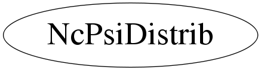

class NcPsiDistrib
Class NcPsiDistrib Tool to analyse the distribution of possibly observed psi values (see NcMath::PsiValue()) in the case of random background only or in the presence of a user-specified signal. Example: comparing two psi distributions for 60 observed events: 1) Under the hypothesis of background only 2) Under the hypothesis of a signal of 10 events in one bin Int_t ntrials=10000; Int_t nbins=1000; Int_t nsig=10; Int_t nbg=50; NcPsiDistrib pd; pd.SetNtrials(ntrials); pd.SetNoutcomes(nbins); // BG only pd.SetNevents(nbg+nsig); Int_t sig[nbins]; for(Int_t i=0; i<nbins; i++) { sig[i]=0; } pd.SetSignal(sig); pd.Distribute(1); TH1D bgonly; pd.GetPsiHisto()->Copy(bgonly); Double_t meanbgonly=pd.GetPsiSample()->GetMean(1); Double_t spreadbgonly=pd.GetPsiSample()->GetSigma(1); Double_t medianbgonly=pd.GetPsiSample()->GetMedian(1); // Signal pd.SetNevents(nbg); sig[0]=nsig; // Add signal events pd.SetSignal(sig); pd.Distribute(1); TH1D bgplussig; pd.GetPsiHisto()->Copy(bgplussig); Double_t meansig=pd.GetPsiSample()->GetMean(1); Double_t spreadsig=pd.GetPsiSample()->GetSigma(1); Double_t mediansig=pd.GetPsiSample()->GetMedian(1); // Output cout << nbg << " background events, " << nsig << " signal events" << endl; cout << "Background only: psi = " << meanbgonly << " +/- " << spreadbgonly << ", median = " << medianbgonly << endl; cout << "Signal: psi = " << meansig << " +/- " << spreadsig << ", median = " << mediansig << endl; // Draw histograms bgonly.Draw(); bgplussig.Draw("same"); --- Author: Garmt de Vries-Uiterweerd 15-jun-2008 Utrecht University - Modified: NvE $Date: 2010-03-19 11:10:02 +0100 (Fri, 19 Mar 2010) $ NCFS
Function Members (Methods)
public:
| NcPsiDistrib() | |
| NcPsiDistrib(const NcPsiDistrib&) | |
| virtual | ~NcPsiDistrib() |
| static TClass* | Class() |
| void | Distribute(Int_t storemode = 0) |
| Double_t | GetFracAbove() |
| Double_t | GetFracBelow() |
| TH1D* | GetPsiHisto() |
| NcSample* | GetPsiSample() |
| virtual TClass* | IsA() const |
| NcPsiDistrib& | operator=(const NcPsiDistrib&) |
| void | SetNevents(Int_t n) |
| void | SetNoutcomes(Int_t n, Double_t* p = 0) |
| void | SetNtrials(Long_t n) |
| void | SetPrintFreq(Int_t freq) |
| void | SetProbabilities(Double_t* p) |
| void | SetPsiRange(Int_t nb, Float_t low, Float_t high) |
| void | SetReferencePsi(Double_t ref) |
| void | SetSignal(Int_t* s) |
| virtual void | ShowMembers(TMemberInspector&) |
| virtual void | Streamer(TBuffer&) |
| void | StreamerNVirtual(TBuffer& ClassDef_StreamerNVirtual_b) |
protected:
| Float_t | FindMaxPsi() |
Class Charts
{kind=link}
{kind=link}
{kind=link}
{kind=link}

Function documentation
void SetNoutcomes(Int_t n, Double_t* p = 0)
Set number of possible outcomes. The optional argument p is an array containing the respective probabilities of the outcomes. Its length must be equal to the number of outcomes. In case no probabilities are specified, a flat distribution is assumed. Setting the number of outcomes resets any signal that may be present.
void SetProbabilities(Double_t* p)
Set probabilities of the possible outcomes. The length of the array passed as an argument must be equal to the number of outcomes. In case p=0, a flat distribution is made.
void SetSignal(Int_t* s)
Set signal counts for each outcome. The length of the array passed as an argument must be equal to the number of outcomes. In case s=0, the signal is set to 0 for all outcomes.
void SetPsiRange(Int_t nb, Float_t low, Float_t high)
Set number of bins and range of the psi histogram.
void Distribute(Int_t storemode = 0)
Make distribution. The parameter storemode is the mode to be used for the NcSample of the psi distribution. In case storemode=1, entered data will be stored in the sample, allowing the user to find the median of the psi distribution. Setting mode=1 can be memory-intensive, and is not advised when dealing with large number of trials. The default is storemode=0, meaning no storage of entered data.
Double_t GetFracBelow()
Get fraction of trials in which a psi smaller than the reference psi is observed.
Double_t GetFracAbove()
Get fraction of trials in which a psi larger than the reference psi is observed.
Float_t FindMaxPsi()
Find the maximum possible psi value with the given signal, probabilities and number of events.